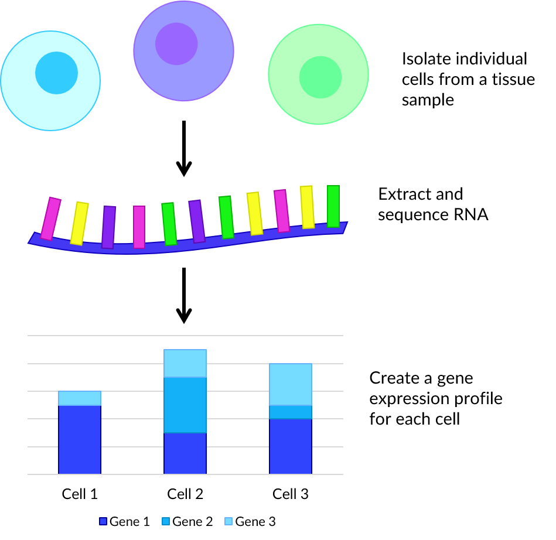

About
This site gives a brief overview of my undergraduate dissertation. The aim being to experiment with clustering and topological data analysis to detect hidden gene expression in three single-cell RNA-seq datasets.
Background

Genes and Proteins
In biology, genes are small sections of DNA that encode proteins. These are important biomolecules with a large range of functions such as: enzymes, antibodies, structural proteins, storage or cell signalling. Studying gene expression can therefore reveal useful knowledge about the biological processes of cells.
Proteins are produced in cells through two steps: transcription and translation. During transcription, DNA is unzipped and sections copied using the enzyme RNA polymerase to produce a complementary molecule called messenger RNA (mRNA). The mRNA then travels to a ribosome where a protein is constructed in a process known as translation. This means that cellular gene expression can be inferred through reading the sequence of bases RNA.
Single-Cell RNA-Sequencing
Single-cell RNA sequencing (scRNA-seq) is a method in which genetic expression is measured across a population of heterogeneous cells of the same type. This has many uses such as detection of rare subpopulations of cells or gene co-expression.
First viable, individual cells are isolated from a tissue sample. For each, the membrane is broken down in a process called lysis as this improves the capture of RNA molecules. Then tagged complementary DNA (cDNA) is synthesized from mRNA through reverse transcription. Small volumes of cDNA are amplified using a technique such as polymerase chain reaction (PCR) which facilitates rapid creation of millions of copies. Each cell’s cDNA library is pooled, then bases read and matched to genes to produce a dataset of counts for each cell.
Improvements in sequencing technologies have made it easy for scientists to read gene expression for thousands to millions of cells. This provides an abundance of big data suitable for evaluation by computational methods that would be hard to analyse by hand in a lab.
Datasets
Benchmark
The first dataset was created by Tian et al. and is officially named sc_10x, though here is referred to as the "Benchmark dataset". This contains gene counts of 902 cells from three human lung adenocarcinoma cell lines HCC827, H1975 and H2228. These counts were produced using the 10X Chromium scRNA-seq protocol.
Simulated
The second dataset was created during this project using the Splat simulator which is part of the R package Splatter. To replicate the gene expression of real cells, the Splat simulator was seeded with the benchmark dataset.